# Atomic Frontiers in Dark Matter Detection: <div class="r-stack"> <h2 class="fragment fade-out" data-fragment-index="0">Enlightening the search for Dark Matter </h2> <h2 class="fragment current-visible" data-fragment-index="0">En<i>light</i>ening the search for Dark Matter </h2> </div> <br> <br> ### TMEX 2025: 21$^{st}$ Rencontres du Vietnam #### ICISE, Quy Nhon, Vietnam #### 5 $-$ 11 January 2025 <br> <br> <!-- <div> <font size="4"> * PhysRevLett.124.081101 (2020)<br> * NJP 22, 093010 (2020)<br> * PhysRevLett.124.081101 (2021)<br> * Nat Comms 8, 1195 (2017)<br> * PhysRevD.108.083030 (2023)<br> </font> </div> --> <div class="r-stretch"></div> ### Benjamin M. Roberts <br> School of Mathematics and Physics, University of Queensland, Australia <br> * Slides [broberts.io/slides](https://broberts.io/slides/) <br> <br> <img src="img/uq-logo.svg" width="25%"> Supported by: ARC and <img src="img/BQI.png" width="20%"> <br>
# The Standard Model + General Relativity <br> <div style="text-align: center; float: left; width: 50%"> <img src="https://upload.wikimedia.org/wikipedia/commons/2/2b/Standard_Model_of_Elementary_Particles_dark.svg" width="95%"> <font size="3"> Credit: Cush [Wikimedia Commons]</font> </div> <div style="text-align: left; float: right; width: 47%"> <h2>Tested with extraordinary precision</h2> <br> <h3> • e.g., electron magnetic moment, Higgs boson</h3> <h3> • gravitational lensing, gravitational waves</h3> <br><br><br> <h2>However...</h2> <br><br><br> <div class="fragment"> <h2>Several deep inconsistencies</h2> <h2>with the observed universe</h2> </div> </div>
# Unexplained mysteries (among others) <br> <div style="text-align: center; float: left; width: 70%"> <div class="fragment" data-fragment-index="0" style="text-align: left;" data-markdown> <h2>Matter anti-matter asymmetry</h2> <h3> • CP-violation in the Standard Model is too small</h3> </div> <br> <div class="fragment" data-fragment-index="1" style="text-align: left;" data-markdown> <h2>Nature of Dark Energy</h2> <h3> • Accelerated expansion of universe <h4> • Cosmologists: Why is Λ so large? • Particle theorists: Why is Λ so small? </h4> </div> <div class="fragment" data-fragment-index="2" style="text-align: left;" data-markdown> <h2>Nature of Dark Matter</h2> <h3> • Missing mass from the universe • Matter that interacts <em>only</em> gravitationally? </h3> </div> <br> <div class="fragment" data-fragment-index="3" style="text-align: left;" data-markdown> <h3> 95% of universe is "dark"; we can only use the 5% to learn about the rest! </h3> </div> </div> <div style="text-align: left; float: right; width: 25%"> <br> <br><br><br><br> <img class="fragment" data-fragment-index="1" src="img/dm-pie.jpg" width="95%"> </div>
# How to break physics? ## Want to find direct evidence for physics _beyond_ standard model <div class="fragment" style="text-align: center; float: left; width: 50%"> <br> <br> <br> <img src="img/lhc.png" width="90%"><br> <font size="3">[CERN]</font> </div> <div style="text-align: left; float: right; width: 45%"> <br> <div class="fragment"> <h2> Particle Accelerators</h2> <h3> • Directly search for new particles</h3> <h3> • High energy, very expensive</h3> </div> <div class="fragment"> <br> <h2> CERN/LHC</h2> <h3> • Hoped to find evidence for something beyond</h3> <h3> • So far, no luck!</h3> </div> <div class="fragment"> <br> <h2> Alternative approach</h2> <h3> • Low-energy, high precision</h3> <h3> • Look for any violations of laws of physics</h3> </div> </div>
# Dark Matter: What we know <br> <h3> There's lots of it</h3> <h3> It gravitationally clusters in halos around galaxies</h3> <h4> (really, galaxies gravitationally cluster around DM)</h4> <div style="text-align: left; float: left; width: 50%" class="fragment"> <br><br> <h2>Very strong evidence:</h2> <br> <h3>• Rotation curves, gravitational lensing, CMB </h3> <br> <h3>• Also: large scale structure, BAO etc. </h3> <br> <h3 class="fragment">• It's not strange for particles to not interact with light (e.g., neutrinos)</h3> <br> <br> <!-- <h3 class="fragment">• ΛCDM model works extremely well <h3 class="fragment">• (Just need to work out the Λ and CDM parts)</h3> --> </div> <div style="text-align: center; float: right; width: 50%"> <br><br><br><br> <img src="img/dm-pie.jpg" width="55%"><br> </div>
# Dark Matter: What we don't know <br> <div class="fragment" data-fragment-index="0"> <h2> ... everything else</h2> </div> <br> <!-- <img src="img/DM_masses2.png" width="80%"> --> <div class="r-stack"> <img class="fragment" data-fragment-index="1" src="img/DM_masses2.png" width="80%"> <img class="fragment" data-fragment-index="3" src="img/DM_masses3.png" width="80%"> </div> <div class="fragment" data-fragment-index="1"> <font size="3">US "Cosmic Visions" report [arXiv:1707.04591]</font> </div> <br> <br> <div class="fragment" data-fragment-index="1"> <h3>• Possible mass range: 90 orders of magnitude!</h3> </div> <div class="fragment" data-fragment-index="2"> <h3>• Fundamental particle: 50 orders (de Broglie to Planck)</h3> </div> <br> <div class="fragment"> <h3> • Vast majority of focus on WIMPs, but field is very wide</h3> </div>
# WIMP Searches: XENON <div style="text-align: left; float: left; width: 60%"> <div class="r-stack"> <div class="fragment fade-out" data-fragment-index="1"> <br><br><br> <img src="img/Feynman.png" width="65%"> <br><br> <h3 class="fragment highlight-red" data-fragment-index="0">• Direct detection (scattering)</h3> <h3>• Indirect detection (annihilation)</h3> <h3>• Collider searches (production)</h3> </div> <div> <div class="fragment fade-in" data-fragment-index="1"> <br> <h3>Excluded cross-section for WIMPs:</h3> 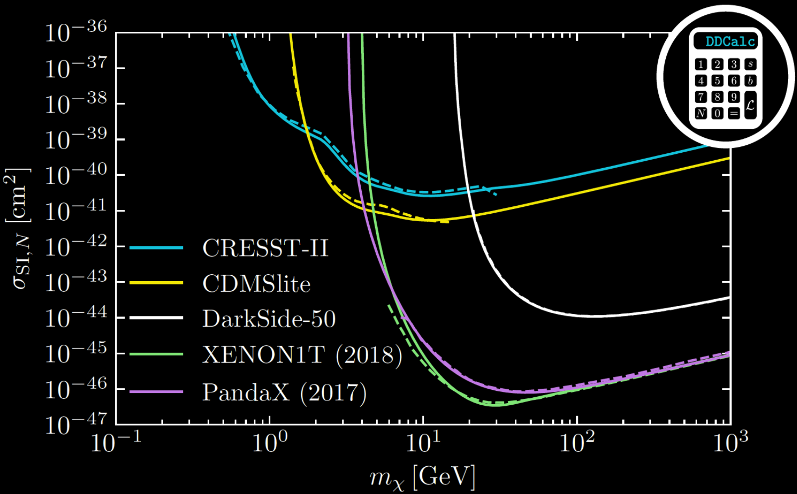 </div> <br> <h3 class="fragment fade-in" data-fragment-index="2"> • Mass below nuclear mass: energy threshold </h3> <h3 class="fragment fade-in" data-fragment-index="2"> • High mass: fewer particles </h3> <h3 class="fragment fade-in" data-fragment-index="3"> • Challenge: extend to lower masses </h3> </div> </div> </div> <div style="text-align: center; float: right; width: 40%"> 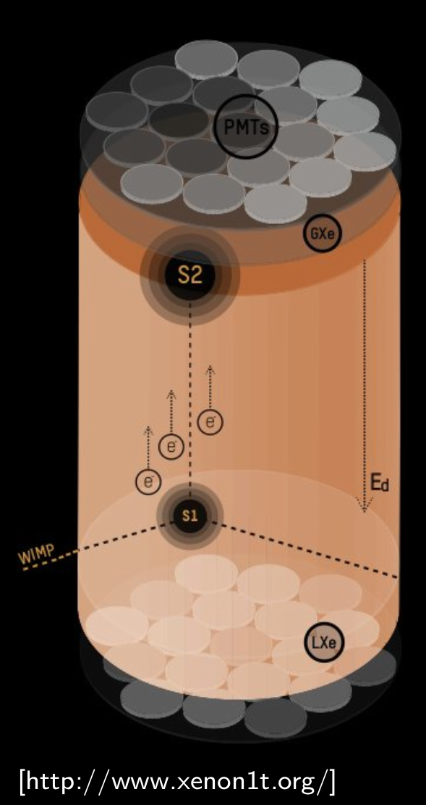 </div>
# En*light*ening the search for Dark Matter? ## Atomic Physics! <br> <div style="text-align: center; float: left; width: 60%"> <div class="fragment" data-fragment-index="0" style="text-align: left;" data-markdown> <h2> Mass drops below nuclear mass:</h2> <h3> • No nuclear recoils. Instead: electron recoils + ionisation <font size="6">• e.g., Ashlee Caddell, Flambaum, BMR, Phys. Rev. D <b>108</b>, 083030 (2023) </font> </h3> </div> <div class="fragment" data-fragment-index="1" style="text-align: left;" data-markdown> <h2> Mass drops below electron mass:</h2> <h3> • No electron recoils • Instead: absorption (dark photoelectric effect)</h3> </div> <br> <div class="fragment" data-fragment-index="2" style="text-align: left;" data-markdown> <h2> Mass drops below eV:</h2> <h3> • Classical DM field • Quantum sensing (atomic clocks)</h3> </div> <br> </div> <div style="text-align: center; float: right; width: 40%"> <br> <img class="fragment" data-fragment-index="0" src="img/atom.png" width="40%"> <br><br> <div class="r-stack"> <div class="fragment" data-fragment-index="2"> 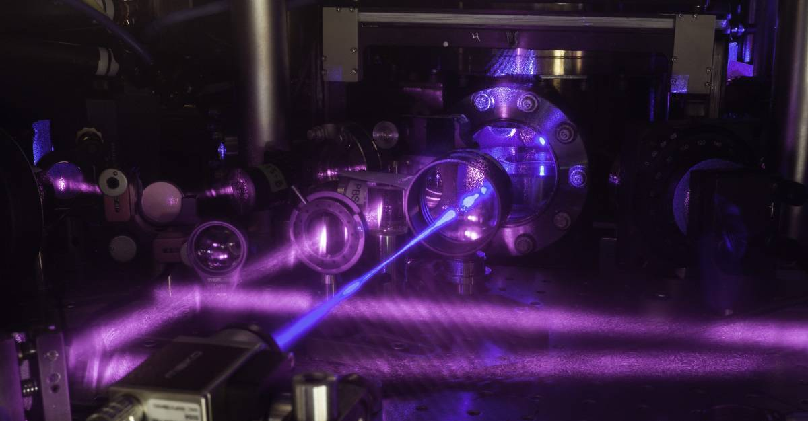<br> <font size="3">[JILA]</font> </div> <div class="fragment" data-fragment-index="3"> <img src="img/Ye_UCBolder-SrLattice.jpg" width="80%"><br> <font size="3">[Ye/UCBolder]</font> </div> </div> </div>
# Ultralight Dark Matter <br><br> $$ \Huge {\rho_{\rm DM}\simeq 0.3 ~ \frac{\rm GeV}{{\rm cm}^3}} $$ <br> ## Mass decreases $\implies$ number density increases: ## Classical boson field (e.g., axions, scalars) <br> <div style="text-align: left; float: right; width: 70%"> <div class="fragment fade-in"> <h3> 1. No interaction: oscillation: $\phi = \phi_0 \cos(m_\phi t)$ </h3> \[\phi_0^2\propto \rho_{\rm DM}\] </div> <h3 class="fragment fade-in"> 2. Interactions: clumps </h3> <br> <h3 class="fragment fade-in"> 3. Also: constant build-up (local over-densities) </h3> </div> <h2 class="fragment fade-in"> Classical field: quantum sensors (clocks) </h2>
# Clock: a thing that ticks ### Predictable, period motation + method to count ticks <br> <div> <div class="fragment fade-in" style="text-align: center; float: left; width: 32%"> <br> <font size="3">[Getty]</font> <br> <h3> Earth's orbit/rotation </h3> </div> <div class="fragment fade-in" style="text-align: center; float: left; width: 32%"> 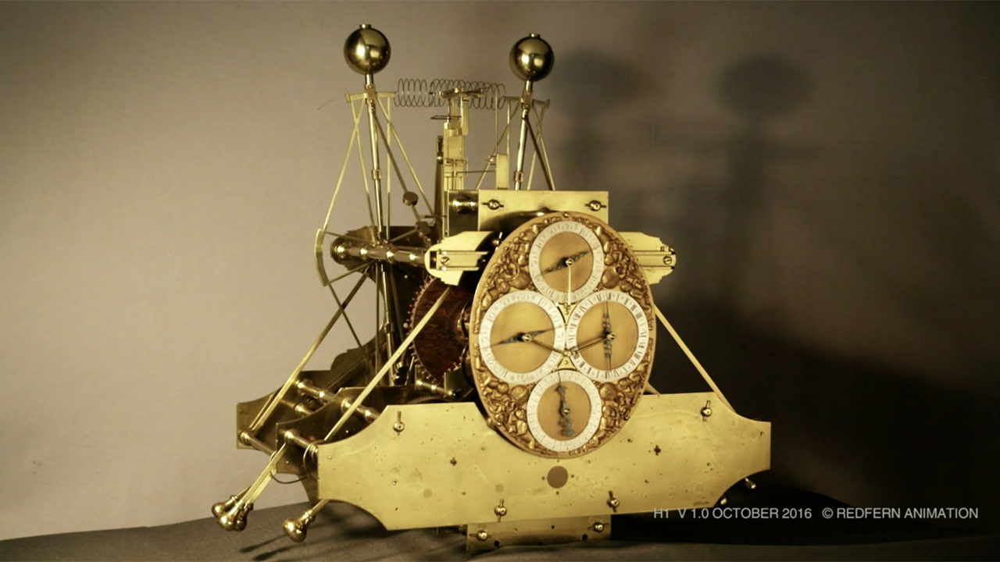<br> <font size="3">[H1, Royal Museums Grenwhich]</font> <br> <h3> Swinging pendulum </h3> </div> <div class="fragment fade-in" style="text-align: center; float: right; width: 32%"> <font size="3"> [JILA]</font> <br> <h3> Oscillating electromagnetic wave </h3> </div> </div> <br> <br> <div class="fragment fade-in" style="text-align: left; float: left; width: 100%"> <br> <br> <br> <h3> • Pendulums (+all kinematic clocks): depend on materials, location, temperature etc. <br> • Earth rotation: unstable at ~5 ms per day $10^{-7}$ <br> • Atomic clock: universal timekeeping based on fundamental physics </h3> </div>
# Atomic Clocks 101: <br> ### Frequency reference: atomic transition <br> <br> <div class="fragment fade-in" style="text-align: center; float: left; width: 32%"> 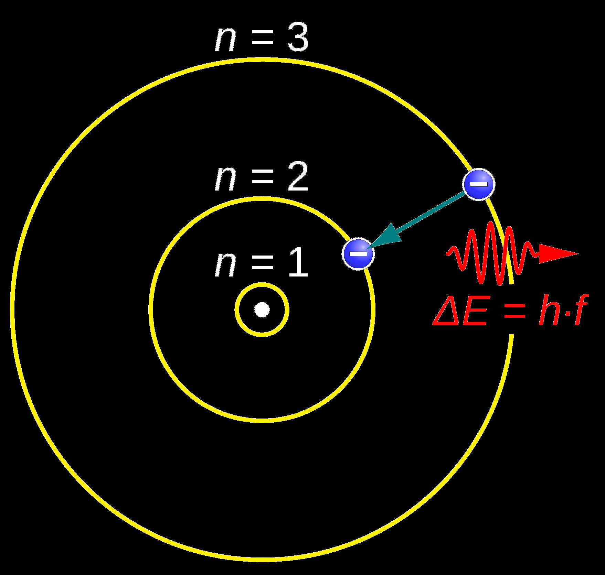<br> <font size="3"> JabberWok [Wikimedia Commons]</font> <br><br><br> <h3> Atomic transition: "perfect*" frequency reference </h3> </div> <div class="fragment fade-in" style="text-align: center; float: left; width: 32%"> <img src="img/Wcislo2016.png" width="95%"> <font size="3">[Wcislo, Nature Astronomy (2016)]</font> <br><br><br> <h3> Compare frequency of oscillator to atomic transition </h3> </div> <div class="fragment fade-in" style="text-align: center; float: right; width: 32%"> <img src="img/Al+Choi2010.png" width="95%"> <font size="3">[Chou et al., Science 329, 1630 (2010)]</font> <br><br><br> <h3> Lock on: Adjust local oscillator to maximum transition rate </h3> </div>
# Moore's law for atomic clocks <div class="r-stack"> <div class="fragment fade-out" data-fragment-index="0"> <img src="img/MooreClock2020-MW.png" width="100%"> </div> <div class="fragment fade-in" data-fragment-index="0"> <img src="img/MooreClock2020.png" width="100%"> </div> </div> <!-- <img src="img/MooreClock2020.png" width="55%"> --> <font size="4"> [Pacome Delva <i>et al.</i>, Chronometric Geodesy: Methods and Applications (2019)] </font>
# Optical atomic clocks <br><br> <div class="fragment fade-in" style="text-align: left; float: left; width: 55%"> <br> <font size="3"> [M. Safronova]</font> <br> <br> <br> * Requires ultra-stable laser ("see" narrow line) * Frequency comb ("listen" to high frequency) </div> <div class="fragment fade-in" style="text-align: center; float: right; width: 45%"> <img src="img/basicclock2.png" width="95%"> <font size="3">[Centre for Quantum Technologies | U. Singapore]</font> <br> <br> <br> <font size="3">[Diddams <i>et al.</i>, Science <b>369</b>, 3676 (2020)]</font> </div> <div class="fragment fade-in"> <br> * Accurate to parts in $10^{18}$ * better than 1 s over lifetime of the universe! </div>
# Example: gravitational redshift <br> $$ \Huge {\color{orange} \frac{\Delta f}{f} = -\frac{\Delta U}{c^2} \sim 10^{-16} \frac{\Delta r}{{\rm m}} } $$ <br> <div class="fragment fade-in" style="text-align: center; float: left; width: 60%"> <img src="img/Chou-A.png" width="50%"> <br> <font size="4">30 cm [Chou et al., Science <b>329</b>, 1630 (2010)]</font><br><br> * $\sim$ 30 cm </div> <div class="fragment fade-in" style="text-align: center; float: right; width: 40%"> 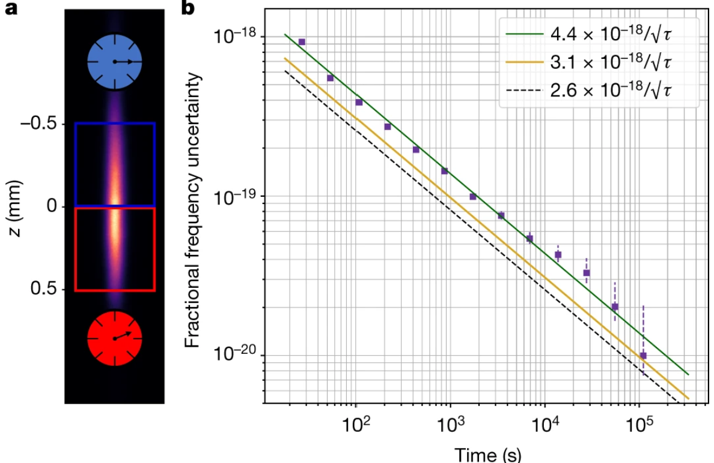 <br> <font size="4">[Bothwell <i>et al.</i>, Nature <b>602</b>, 420 (2022)] </font><br><br> * $\sim$ 1 mm </div> <div> <br> * Gravitational red-shift is one of the biggest systematic which must accounted for in clock comparisons -- even within the same lab! </div>
# "Listen" for DM field using atomic clocks <br> <div style="text-align: left; float: left; width: 50%"> <br> <br> <img src="img/NHanacek_NIST.png" width="90%"><br> <font size="3">[N Hanacek/NIST]</font> </div> <div style="text-align: left; float: right; width: 50%"> <br> <div> <h3> • Exotic field may have small interaction with matter<br> • Shift atomic energy levels and frequencies </h3> <h3> • Monitor with atomic clocks! </h3> </div> <br> <br> <div class="fragment fade-in"> <h3>Observable shift:</h3> <br> \[{\large \frac{\delta f}{f} = \kappa \, \phi_{\rm DM}(\vec{r},t)} \] <br> <br> <h3> • $\kappa$ - model dependent parameter </h3> <h3> • Calculated: high-precision atomic theory </h3> </div> <br> <div class="fragment fade-in"> <h3>Example: variation of constants</h3> <br> \[{\large {\mathcal{L} = \phi F_{\mu\nu}F^{\mu\nu}} {\implies \alpha\to\alpha+\phi_{\rm DM}(\vec{r},t)}} \] $${\large {\kappa = \frac{{\rm d} (f/f_0)}{{\rm d} (\alpha/\alpha_0)}}} $$ </div> <br> </div>
# Variation of fundamental constants <br> <div> \[\large \omega^{A} = \underbrace{F_A(\alpha)}_{\text{Transition-specific}} \times \underbrace{m_e c^2\alpha^2}_{\text{Units}} \] </div> <div class="fragment" style="text-align: center; float: left; width: 50%"> <br><br> <br> <font size="3">[JabberWok/Wikipedia]</font> <br><br><br> \[ \frac{\Delta\omega}{\omega} = \kappa\frac{\Delta\alpha}{\alpha} \qquad\qquad\qquad \left( {\color{red}\kappa \equiv \frac{\partial \omega}{\partial \alpha}\frac{\alpha_0}{\omega}} \right) \] <br> * In general, $\kappa$ calculated from atomic theory <br> * Dzuba, Flambaum, Webb [Phys Rev Lett 82, 888 (1999)](https://journals.aps.org/prl/abstract/10.1103/PhysRevLett.82.888) </div> <div class="fragment" style="text-align: center; float: right; width: 50%"> <br> <br> <img src="img/AlphaSensitivity.png" width="90%"><br> <font size="3">[M. Murphy 2012]</font> <br> <br> • Difference transitions: different $\kappa$ sensitivity </div>
# Oscillating signals <div style="text-align: left; float: left; width: 50%"> <br> <h3>Case: oscillating field:</h3> \[{\large \phi_{\rm DM} = \phi_0 \cos({m_\phi t})} \] <br> \[\large \frac{\delta f}{f} = \kappa \phi_0 \cos({m_\phi t}) \] <br> <br> <div class="fragment fade-in"> <h2>Constraints from clock-clock comparisons</h2><br> <h3>• Different systems: probe different couplings</h3> <br> <h4>• Optical-Optical: $d_e$ ($\delta\alpha)$</h4> <br> <h4>• Optical-Microwave: $d_{m_e}-d_{m_p}$ ($\delta(m_e/m_p)$)</h4> <br> </div> <div class="fragment fade-in"> <h3>• Dimensionful couplings always cancel in these ratios</h3> </div> </div> <div style="text-align: center; float: right; width: 50%"> <br> <br> <div class="fragment fade-in" data-fragment-index="3"> <h3>Typical: Compare two local clocks, different $\kappa$</h3> <br> <p>[O'Hare - GitHub/AxionLimits]</p><br> </div> </div>
# Space-time separated sensors * Filzinger, Caddell, Jani, Steinel, Giani, Huntemann, BMR, [arXiv:2312.13723](https://arxiv.org/abs/2312.13723) <br> <br> <br> <div style="text-align: left; float: left; width: 50%"> ### Typical local experiment: <br> $$\large \frac{\delta(\nu_a/\nu_b)}{(\nu_a/\nu_b)} = \phi_0 \\, ( d_{a} - d_b) \\, \cos(\omega t) $$ <br> <div class="fragment fade-in"> * Non-zero effect from two _different_ transitions only * Certain couplings always cancel * e.g., Universal couplings </div> <br><br> <img src="img/Local.png" width="75%"><br> </div> <div style="text-align: left; float: right; width: 50%" class="fragment fade-in"> ### Separated (identical) sensors: <br> <div> \[\large \frac{\delta(\nu_a/\nu_b)}{(\nu_a/\nu_b)} = \phi_0 \, d_{\rm eff} \left(\cos(\omega t) -\cos(\omega t-\delta)\right) \\ \delta = \omega\Delta t - k_z D \] </div> <br> <div class="fragment fade-in"> * Now: _field_ is different between clocks * Spatial and temporal component (depends on experiment) * Allows access to unconstrained couplings </div> <img src="img/Separated.png" width="80%"><br> </div>
# Space-time separated sensors: initial results * Filzinger, Caddell, Jani, Steinel, Giani, Huntemann, BMR, [arXiv:2312.13723](https://arxiv.org/abs/2312.13723) <br> <div style="text-align: center; float: left; width: 50%"> <br> <!-- <img src="img/dme-amplitude-b.png" width="90%"><br> --> <div class="r-stack"> <img class="fragment fade-out" data-fragment-index="1" src="img/deff.png" width="90%"><br> <img src="img/dme2.png" width="90%"><br> </div> <font size="4"><a href="http://arxiv.org/abs/2312.13723">[arXiv:2312.13723]</a></font> </div> <div style="text-align: left; float: right; width: 50%"> * Existing data: [Schioppo _et al._, Nat.Comms 13 (2022)](https://www.nature.com/articles/s41467-021-27884-3) * Comparison of ultra-stable cavity lasers * 750 km apart (2220 km Fibre cable: PTB to NPL via SYRTE) * Sensitive to _spatial_ phase shift <br> * Also: Data from GPS satellites (Rb clocks) * Clocks less accurate, but setup sensitive to _temporal_ term <br> * First Constraints on $d_{m_e}$ along at low-frequency<br> * Sensitivity to _spatial_ fluctions of DM, daily oscillation<br> <br> <div class="fragment fade-in" data-fragment-index="2"> <img src="img/dailymod.png" width="90%"><br> </div> </div> <!-- <img src="img/deff.png" width="90%"><br> -->
# Transient Signals <br><br><br> <div style="text-align: left; float: left; width: 50%"> 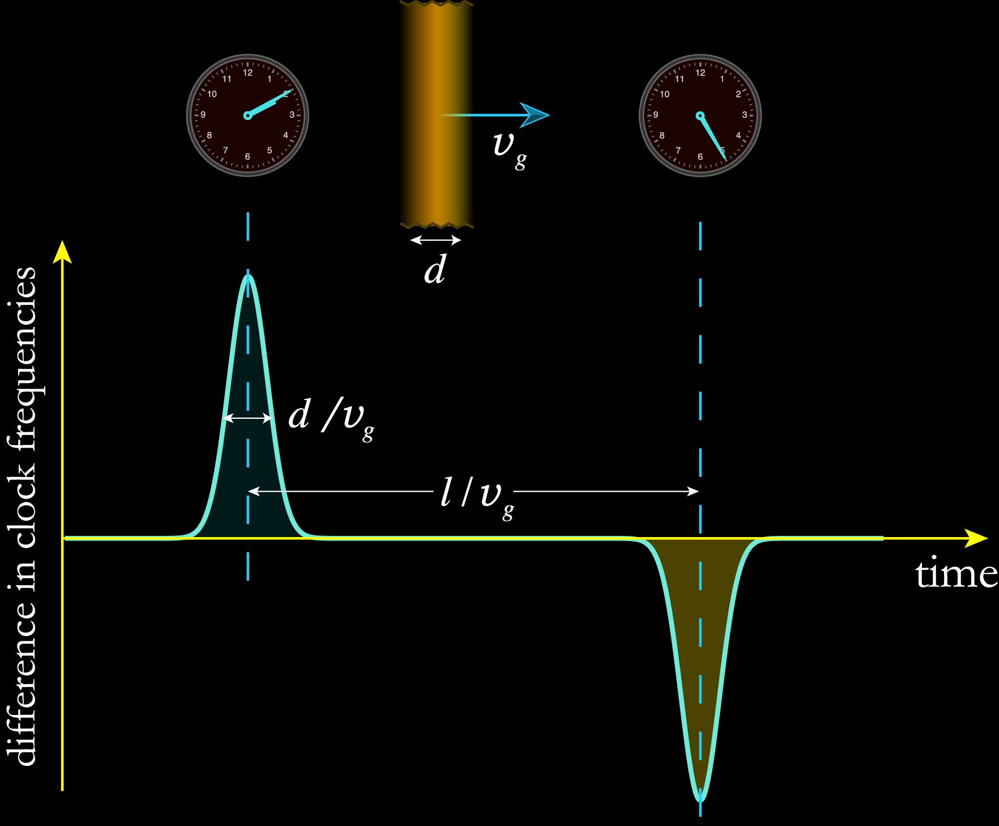 Derevianko + Pospelov, [Nature Physics (2014)](http://www.nature.com/doifinder/10.1038/nphys3137) </div> <div style="text-align: left; float: right; width: 50%"> <h3>• Scalar DM with small self-interaction:</h3> <br> <h3>• May form "clumps": topological defects, Q-balls</h3> <br> <h3> • Topological defects: size $d\sim 1/m_\phi$</h3> <br> <h3> • $m=10^{-10}$ eV $\implies$ $d\simeq 1$ km</h3> <br> <h3>• Wait until one passes through Earth</h3> <br> <h3>• How to distinguish from noise?</h3> <br> <h3> • Correlated signal across global network</h3> </div>
# GPS.DM <div style="text-align: left; float: left; width: 35%"> <br> <h3>• 30 Cs, Rb atomic clocks</h3> <br> <h3>• Over 20 years of high-quality data</h3> <br> <h3>• Publicly available (JPL)</h3> <br> <h3>• 50,000 km Dark Matter observatory</h3> <br> <div class="fragment fade-in"> <video width="75%" data-autoplay muted> <source src="img/GPSDM.mp4"> </video><br> <font size="3">[Video: Conner Dailey]</font> </div> </div> <div style="text-align: center; float: right; width: 65%"> 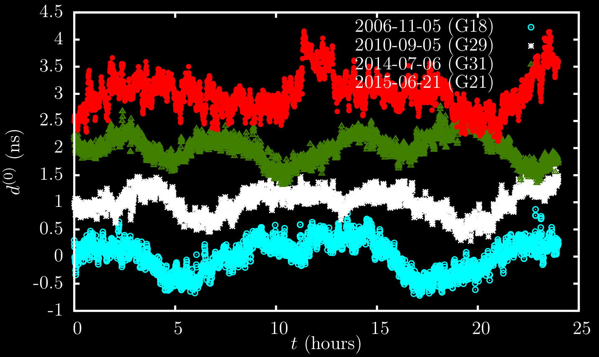 <br> <br> <br> <div class="fragment fade-in"> 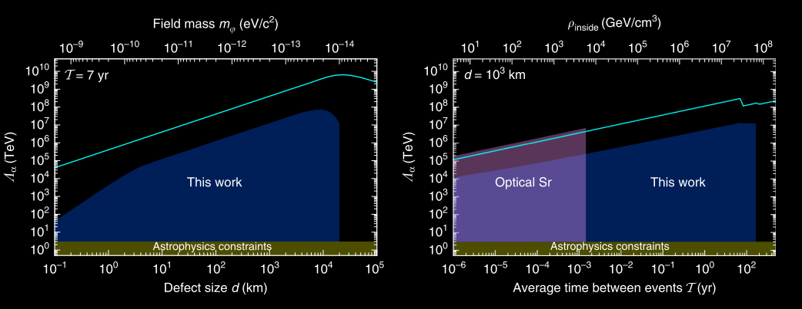 <b>BMR</b>, Blewitt, Dailey, Murphy, Pospelov, Rollings, Sherman, Williams, Derevianko, <br> <a href="http://www.nature.com/articles/s41467-017-01440-4"> Nature Comms. (2017)</a> </div> </div>
# European Fibre-linked network <br> <div style="text-align: center; float: left; width: 50%"> <img src="img/FibreLinkDiagram.png" width="70%"> <br> </div> <div style="text-align: left; float: right; width: 50%"> <h3>• Laboratory optical clocks</h3> <br> <h3>• Orders-of-magnitude higher precision</h3> <br> <h3>• Orders-of-magnitude less data</h3> <h3> • (hours, not years)</h3> </div> <div class="fragment fade-in"> <br> <img src="img/SYRTE-results.png" width="80%"><br> <b>BMR</b>, et al., (SYRTE, PTB, NPL) <a href="https://iopscience.iop.org/article/10.1088/1367-2630/abaace"> N. J. Phys. (2020)</a> </div>
# Constant background: ### _extreme gravitational environment_ <img src="img/Galactic_centre_pillars.jpg" width="95%"><br> <font size="3">[ESA / C. Carreau]</font>
# Super-massive black hole at the Galactic Centre <br><br><br> <div style="text-align: left; float: left; width: 50%"> <h3>• with UCLA Galactic Centre Group</h3> <h4> • Observations led by Tuan Do</h4> <h4> • Andrea Ghez: 2020 Nobel prize for discovery of black hole</h4> <h4> • Analysis led by Aurelien Hees</h4> <br> <h3>• Keck telescope in Hawaii</h3> <br> <h3>• Motion of ∼1000 stars tracked</h3> <h4> • Precise spectroscopy for many stars</h4> <br> <br> <div class="fragment fade-in"> <h3>• High gravitational potential</h3> <h3>• Possibly large concentration of dark matter </h3> <h3>• (also other "exotic" physics)</h3> </div> </div> <div style="text-align: center; float: right; width: 50%"> <img src="img/keck-ao.jpg" width="95%"> <font size="3">[Keck Observatory | Ethan Tweedie Photography]</font> <br> <br> <!-- <img class="fragment fade-in" src="img/equation.png" width="95%"> --> <br> </div>
# New physics in high gravity? <img src="img/spectra.png" width="60%"> <br> <br> <div class="fragment fade-in"> <img src="img/equation.png" width="40%"> <br> $$\large \Delta \alpha / \alpha \lesssim 10^{-5} $$ </div> <br> <div class="fragment fade-in"> * Constrain models for physics beyond GR * Not as sensitive as Earth-based lab clocks: but first time near black hole * and, with incidental data: significant improvements expected with dedicated measurements </div> <!-- 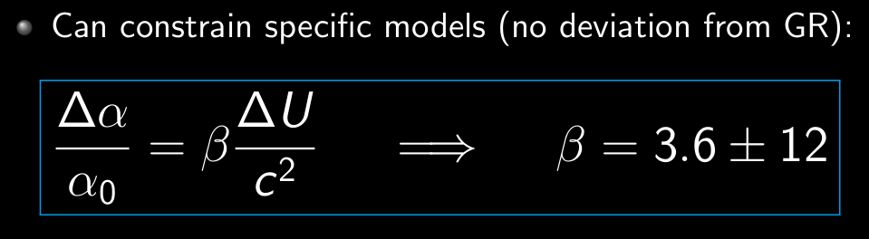 --> <br> <br> * Hees, Do, **BMR**, Ghez _et al._, [Phys. Rev. Lett. **124** 081101 (2020)](https://link.aps.org/doi/10.1103/PhysRevLett.124.081101)
# Conclusion <div> <div style="text-align: left; float: left; width: 50%"> <div> ### Standard Model + General Relativity * Extremely successful, but incomplete <br> <br> ### Dark Matter: Strong evidence, no detection * Low-energy, high-precision atomic physics * Allows search for very low-mass dark matter </div> <br> ### PTB Colloquium, Braunschweig, November 2024 <br> ### Benjamin M. Roberts _School of Mathematics and Physics,_ _University of Queensland, Australia_ <br> * Slides [broberts.io/talks](https://broberts.io/talks) <br><br> <img src="img/uq-logo.svg" width="222%"> </div> <div style="text-align: left; float: right; width: 50%"> <br> <br> <br> * Caddell, Flambaum, BMR, [Phys. Rev. D **108**, 083030 (2023)](https://journals.aps.org/prd/abstract/10.1103/PhysRevD.108.083030) <br> * Savalle _et al._, [Phys. Rev. Lett. **126**, 051301 (2021)](https://link.aps.org/doi/10.1103/PhysRevLett.126.051301) <br> * BMR _et al._, [Nature Comms. **8**, 1195 (2017)](http://www.nature.com/articles/s41467-017-01440-4) <br> * BMR _et al._, [N. J. Phys. **22**, 093010 (2020)](https://iopscience.iop.org/article/10.1088/1367-2630/abaace) <br> * Hees, Do, BMR, Ghez _et al._, [Phys. Rev. Lett. **124** 081101 (2020)](https://link.aps.org/doi/10.1103/PhysRevLett.124.081101) <br> * Filzinger, Caddell _et al._, [arXiv:2312.13723](http://arxiv.org/abs/2312.13723) <br><br> <br><br> Supported by: ARC and <img src="img/BQI.png" width="55%"> </div> </div> <!-- <div> <br> <img src="img/uq-logo.svg" width="25%"> Supported by: ARC and <img src="img/BQI.png" width="20%"> <br><br> </div> -->
# Extra
# Light "WIMPs": electron ionisation <div> <br> <div style="text-align: center; float: left; width: 40%"> 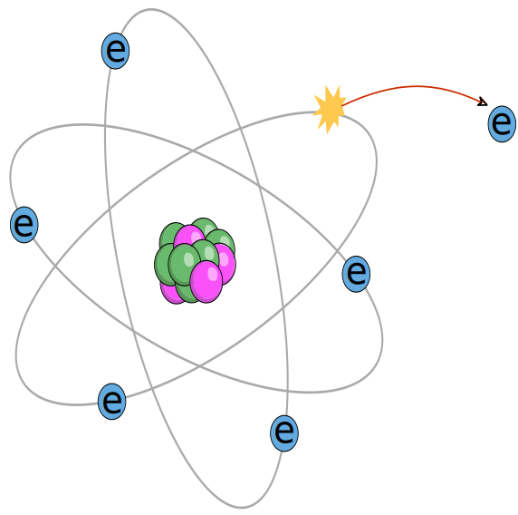<br> <font size="2">[nagwa.com/]</font> </div> <div style="text-align: center; float: right; width: 60%"> <br> <h2>Mass drops below nucleus: no nuclear recoils</h2> <br> <h2>Instead: electron recoils - ionisation $R\propto K$</h2> <br> <img class="fragment fade-in" src="img/K-approx2.png" width="65%"> </div> </div> <div class="r-stretch"></div> * A. R. Caddell, **BMR**, [Phys. Rev. D **108**, 083030 (2023)](https://journals.aps.org/prd/abstract/10.1103/PhysRevD.108.083030) -- _Led by PhD student: Ashlee Caddell_ * **BMR**, V. V. Flambaum, [Phys. Rev. D **100** 063017 (2019)](https://link.aps.org/doi/10.1103/PhysRevD.100.063017) * **BMR**, Flambaum, Gribakin, [Phys. Rev. Lett **116** 023201 (2016)](http://link.aps.org/doi/10.1103/PhysRevLett.116.023201)
# Calculations difficult <div> <div style="text-align: left; float: left; width: 60%"> <br> <br> 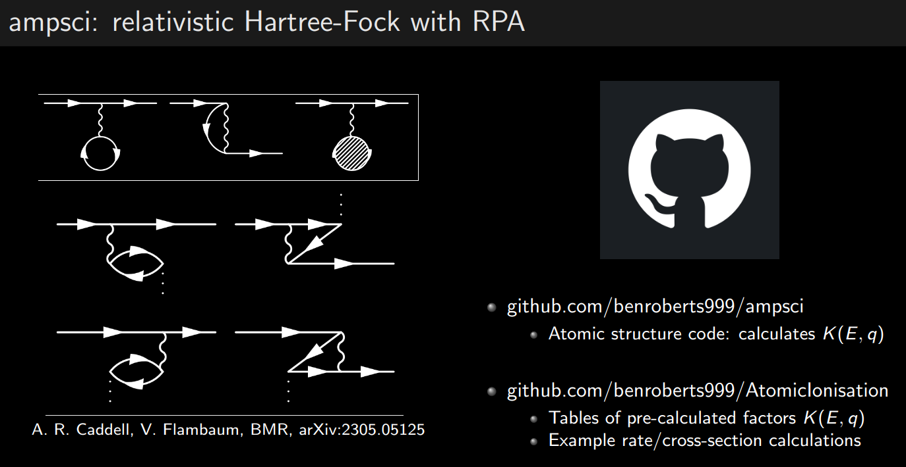 </div> <div style="text-align: center; float: right; width: 40%"> <br> <h2 class="fragment fade-in">Can you test it?</h2> <div class="fragment fade-in"> <h3>Yes! Electron-impact ionisation</h3> <img src="img/e-impact.png" width="95%"> <h3>Better than dedicated calculations</h3> </div> </div> </div> <br> <div class="r-stretch"></div> <br> * A. R. Caddell, **BMR**, [Phys. Rev. D **108**, 083030 (2023)](https://journals.aps.org/prd/abstract/10.1103/PhysRevD.108.083030) -- _Led by PhD student: Ashlee Caddell_
# Scalar-SM? * Overview: Hees _et al._, [PhysRevD.98.064051 (2018)](https://journals.aps.org/prd/abstract/10.1103/PhysRevD.98.064051) <br> <div> </div> <div class="r-stack"> \[\huge \mathcal{L}_{\rm int.} = \phi \left[ {d_e \, F_{\mu\nu}F^{\mu\nu}} + {d_{m_f} \, \bar\psi\psi} + {d_g \, G^a_{\mu\nu}G^{a\mu\nu}}\right] \] <div class="fragment fade-in-then-out" data-fragment-index="1"> \[\huge \mathcal{L}_{\rm int.} = \phi \left[ {\color{yellow}d_e \, F_{\mu\nu}F^{\mu\nu}} + {d_{m_f} \, \bar\psi\psi} + {d_g \, G^a_{\mu\nu}G^{a\mu\nu}}\right] \] </div> <div class="fragment fade-in-then-out" data-fragment-index="2"> \[\huge \mathcal{L}_{\rm int.} = \phi \left[ {\color{yellow}d_e \, F_{\mu\nu}F^{\mu\nu}} + {\color{orange}d_{m_f} \, \bar\psi\psi} + {d_g \, G^a_{\mu\nu}G^{a\mu\nu}}\right] \] </div> <div class="fragment fade-in" data-fragment-index="3"> \[\huge \mathcal{L}_{\rm int.} = \phi \left[ {\color{yellow}d_e \, F_{\mu\nu}F^{\mu\nu}} + {\color{orange}d_{m_f} \, \bar\psi\psi} + {\color{red}d_g \, G^a_{\mu\nu}G^{a\mu\nu}}\right] \] </div> </div> <br><br> <div style="text-align: left; float: left; width: 50%"> <br> <div class="fragment fade-in" data-fragment-index="1"> \[\large {\color{yellow}\alpha \to \alpha(1 + d_e \phi(r,t))} \] <h3> • nb: $d_e = d_\gamma = d_\alpha = 1/\Lambda_\gamma$ </h3> </div> <br> <div class="fragment fade-in" data-fragment-index="2"> \[\large {\color{orange}m_e \to m_e(1 + d_{m_e} \phi(r,t))} \] <h3> • electron and quark masses </h3> </div> <br> <div class="fragment fade-in" data-fragment-index="3"> \[\large {\color{red}m_p \to m_p(1 + d_{g} \phi(r,t))} \] <h3> • Proton mass: binding energy: QCD scale $\Lambda_{\rm QCD}$<br> • Nuclear moments (+ radius): depend on $\Lambda_{\rm QCD}$, $m_q$ </h3> </div> </div> <div style="text-align: left; float: right; width: 50%"> <br> <div class="fragment fade-in" data-fragment-index="4"> <h3> • Optical clock </h3> \[ \begin{align*}\large \omega &\propto R_y \, F_{\rm rel}(Z\alpha) \sim \alpha^{(2+K_{\rm rel})}m_e \\ \frac{\delta\omega}{\omega} &= (2+K_{\rm rel}){\color{yellow}d_e} +{\color{orange}d_{m_e}} \end{align*} \] </div> <br> <div class="fragment fade-in" data-fragment-index="4"> <h3> • Microwave (hyperfine) clock </h3> \[ \begin{align*}\large \omega &\propto R_y \, [\alpha^2 F_{\rm rel}(Z\alpha)] \, (\mu \, m_e/m_p) \\ \frac{\delta\omega}{\omega} &= (4+K_{\rm rel}'){\color{yellow}d_e} + {\color{orange}d_{m_e}} + ({\color{orange}d_{m_e}} - {\color{red}d_g}) + \kappa\, ({\color{orange}d_{m_q}} - {\color{red}d_g}) \end{align*} \] </div> <br> <div class="fragment fade-in" data-fragment-index="4"> <h3> • Cavity-stabilised laser </h3> \[ \begin{align*}\large \omega &\propto 1/a_0 \\ \frac{\delta\omega}{\omega} &= {\color{yellow}d_e} + {\color{orange}d_{m_e}} \end{align*} \] </div> </div>
# Cs fountain clock <div style="text-align: center; float: left; width: 50%"> <br> <font size="3">[NIST | Cs F1 clock]</font> </div> <div class="fragment fade-in" style="text-align: center; float: right; width: 50%"> <img src="img/Cs.png" width="75%"><br> * 1967: $^{133}$Cs hyperfine transition defines $s$ * $f_0 \equiv 9\ 192\ 631\ 770$ Hz * Microwave frequency <br> </div>
# WIMP miracle <div style="text-align: left; float: left; width: 30%"> <br><br> <img src="img/Feynman.png" width="95%"> <br><br> <h3> • Early universe: hot and dense</h3> <h3> DM + SM in thermal equilibrium</h3> <br> <h3 class="fragment fade-in" data-fragment-index="0"> • Universe cools: <br> Boltzmann suppression </h3> <br> <h3 class="fragment fade-in" data-fragment-index="1"> • Universe expands: <br> Shuts off annihilation </h3> <!-- <br> <h3 class="fragment fade-in" data-fragment-index="2"> • Begins in thermal equilibrium </h3> --> </div> <div style="text-align: center; float: right; width: 65%"> <div class="r-stack"> <img class="fragment fade-in" data-fragment-index="0" src="img/YDM/Yeq.png" width="90%"> <img class="fragment fade-in" data-fragment-index="1" src="img/YDM/YDM1.png" width="90%"> <img class="fragment fade-in" data-fragment-index="2" src="img/YDM/YDM2.png" width="90%"> </div> <h3 class="fragment fade-in" data-fragment-index="3"> • Weak interaction ($G_F \simeq 10^{-5}\,{\rm GeV}^{-2}$): new physics scale<br> • $m_{\rm weak} \sim 100\,{\rm GeV}$ <br> </h3> <h3 class="fragment fade-in" data-fragment-index="4"> • $\langle\sigma v\rangle_{\rm weak} \sim {\rm few}\times10^{-26}\,{\rm cm}^3/{\rm s}$ !!! </h3> </div>